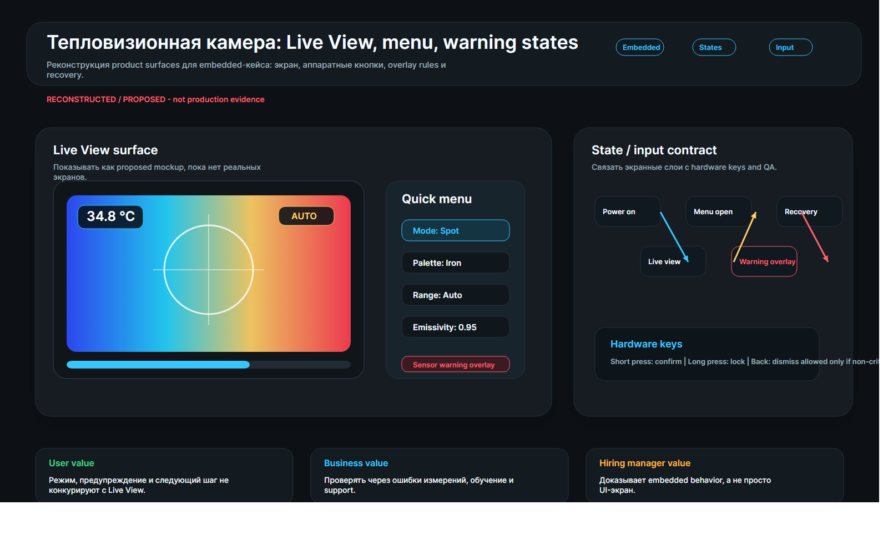

Кнопка должна менять состояние понятно
После физического или экранного ввода пользователь должен сразу видеть, что устройство приняло действие.
Я описал UX тепловизионной камеры как поведение устройства, а не как набор отдельных экранов. Пользователь меняет режим, смотрит на измерение, получает предупреждение и быстро решает: можно ли доверять показанию, что изменилось после ввода и как вернуться к валидному измерению.

В embedded-интерфейсе мало места для текста и почти нет времени на раздумья. Ошибка режима, скрытое предупреждение или неочевидная обратная связь после кнопки могут привести к неверному измерению. Поэтому экран, физический ввод, RGB-индикатор, меню и предупреждения работают как единая система.
После физического или экранного ввода пользователь должен сразу видеть, что устройство приняло действие.
Режим влияет на доверие к измерению, поэтому он должен быть виден до, во время и после действия.
Если устройство сообщает о проблеме, предупреждение не должно конкурировать с подсказками и вторичными слоями.
Я собрал поведение камеры в контракт: какое событие меняет состояние, какой слой получает приоритет, как предупреждение объясняет причину проблемы и каким действием пользователь возвращается к измерению.
Движение объясняет приоритет слоев: измерительный экран остается опорой, предупреждение не прячется за меню, восстановление возвращает пользователя к валидному измерению. Коротко и без фокусов.
Первый кадр показывает не только картинку камеры, но и режим, от которого зависит доверие к измерению.
Обратная связь подтверждает, что устройство приняло ввод и сменило состояние.
Критическое состояние не спорит с меню, подсказками и вторичными слоями.
Восстановление закрывает предупреждение и возвращает контекст измерения без лишней навигации.
Этот фрагмент показывает продуктовую логику embedded UX: экран не просто отображает сведения, а управляет доверием к измерению.
| Состояние | Событие | Эффект | QA-вопрос |
|---|---|---|---|
| Измерительный экран | Включение / возврат | Показать измерительную поверхность и текущий режим. | Может ли пользователь назвать текущий режим? |
| Быстрое меню | Ввод меню | Показать меню, не скрывая критическое предупреждение. | Не конкурирует ли меню с предупреждением? |
| Предупреждение | Датчик / батарея / неверное измерение | Объяснить причину и путь восстановления. | Понятно ли следующее действие? |
| Блокировка режима | Небезопасное переключение | Предотвратить случайную смену режима. | Понятно ли, почему действие заблокировано? |
В embedded-интерфейсе мало места для объяснений, поэтому ясность режима, приоритет предупреждения и обратная связь после нажатия становятся не украшением, а продуктовым поведением.
Эффект такого решения проверяется через время до валидного измерения, долю неверно выбранных режимов, восстановление после предупреждения, повторные действия и вопросы QA по переходам состояний.
Пользователь быстрее понимает текущий режим, причину предупреждения и путь возврата к измерению.
Более ясное поведение устройства должно снижать нагрузку на обучение, вопросы в поддержку и риск неверного измерения. Нужна проверка на устройстве.
Кейс показывает мышление о контракте поведения, вводе, приоритете слоев и восстановлении за пределами статичных экранов.